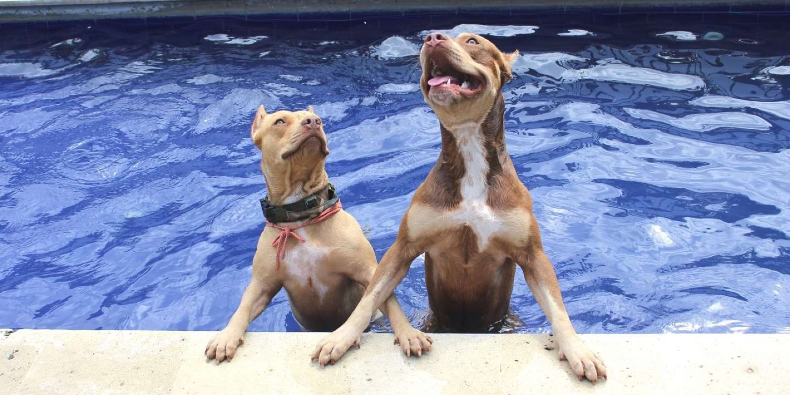
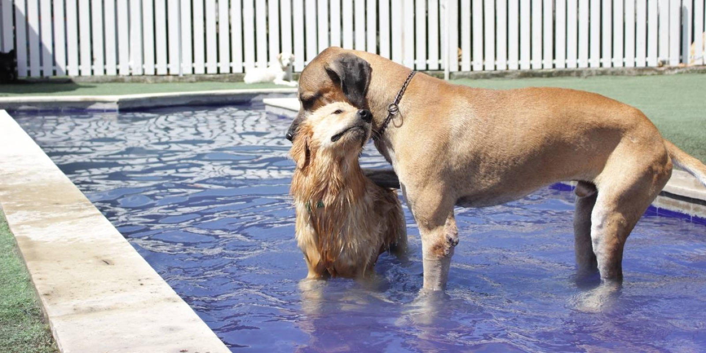
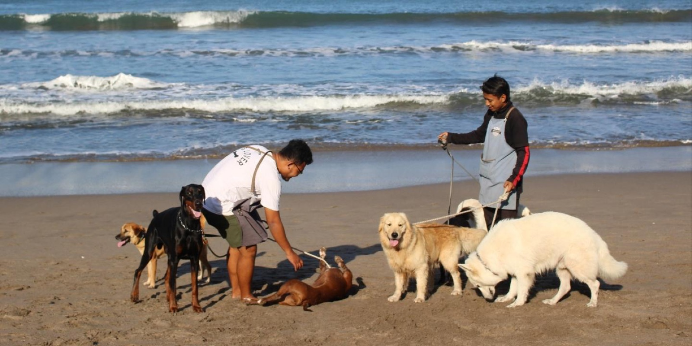
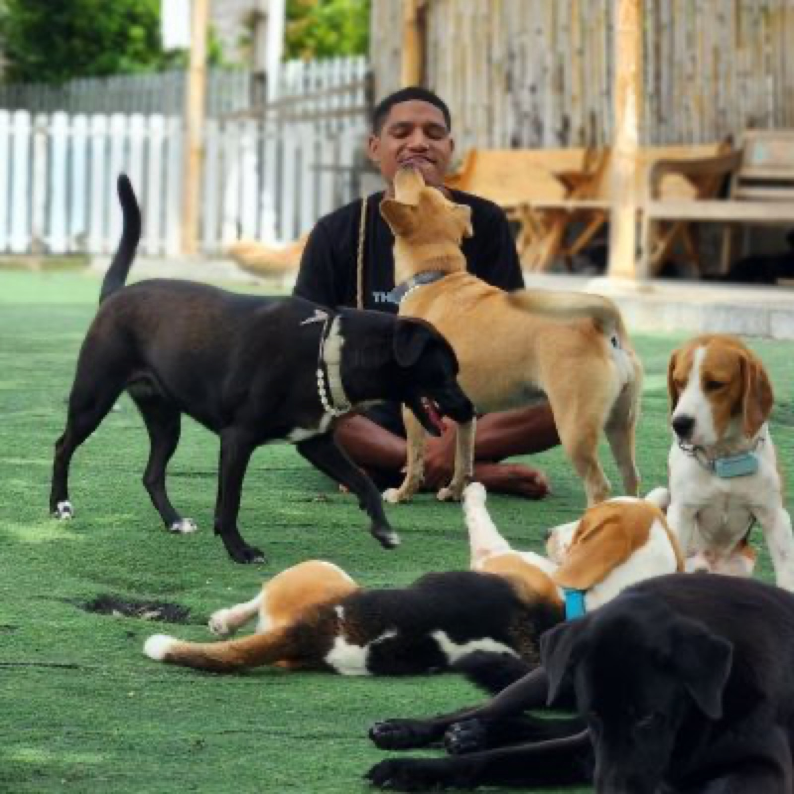

Choose a design direction
All four options are clean and minimalist, based on your references. These are style samples, not the final website. Please open them on your phone too.

Option A
Paper
Clean white and black, simple type, thin lines. Inspired by Blank Street.
View sample →
Option B
Olive
Olive green and stone tones, serif headlines with italics, large photos. Inspired by dogppl.
View sample →
Option C
Soft
Lowercase type, soft sage tones, numbered steps. Inspired by Lil Luv Dog.
View sample →
Option D
Sanctuary
Editorial serif headlines, tidy cards and a daily routine. A blend of all three references.
View sample →What we need from The Dog Club team
- Choose one option. You can also combine them, for example "the colors of B with the layout of A".
- The photos here come from your current website. Newer, high-resolution photos will make the result look much better.
- Once you choose, we will develop it into 2 sample pages (Homepage and Dog Daycare) for your approval, then apply it to all pages.